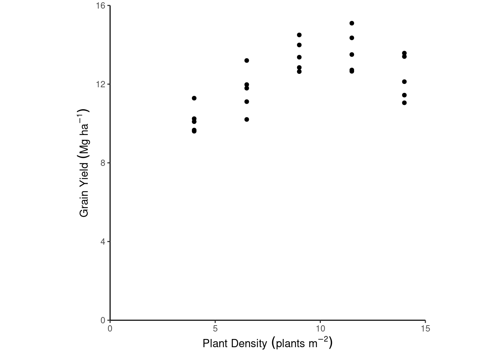
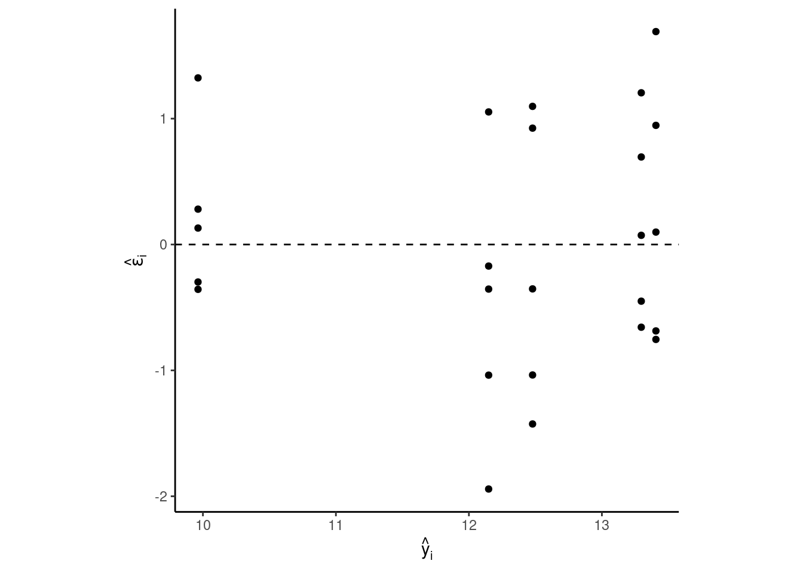
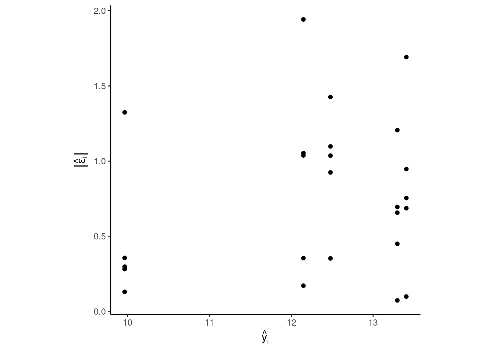
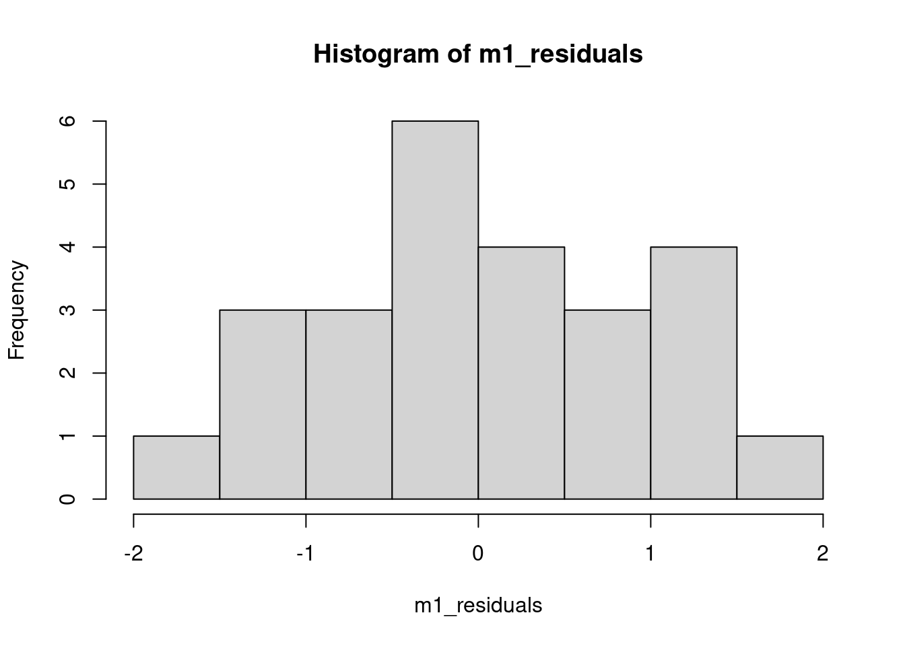
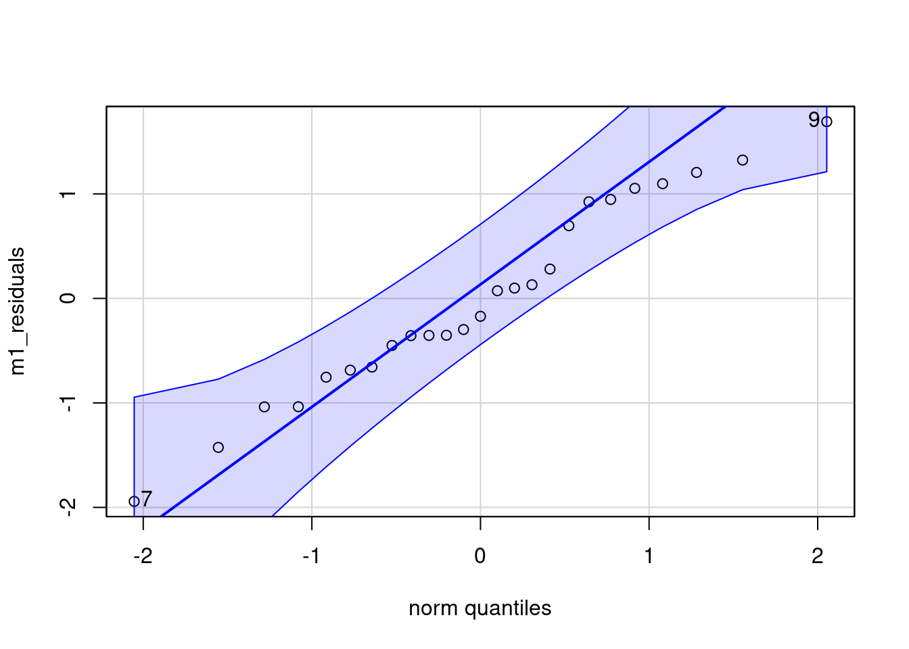

library(tidyverse)
library(ggpubr)
library(latex2exp)
library(car)
url <- "https://raw.githubusercontent.com/jlacasa/stat705_fall2024/main/classes/data/corn_example2.csv"
dd <- read.csv(url)Day 16 - 09/25/2024
Model diagnostics, or evaluating assumptions
Our statistical models are a simplification of reality.
- What can we do with data alone?
- What can we do with data and a statistical model?
- What is a statistical model? (a list of assumptions)
- Our assumptions should represent the data generating process as good as possible.
- Plant density example
- Clover data example
- Plant density example
- Class poll: Do you really expect our assumptions to be exactly right?
dd %>%
ggplot(aes(plant_density, yield_Mgha))+
geom_point()+
labs(x = expression(Plant~Density~(plants~m^{-2})),
y = expression(Grain~Yield~(Mg~ha^{-1})))+
theme_classic()+
coord_cartesian(xlim = c(0, 15),
ylim = c(0, 16),
expand = F)+
theme(aspect.ratio = 1)
Given our prior knowledge about the subject, we can fit the following model:
\[y_i \sim N(\mu_i, \sigma^2),\] \[\mu_i = \beta_0 + \beta_1 x_i + \beta_2 x_i^2,\] for \(i =1, 2, ..., n\) where \(n\) is the total number of observations, \(y_i\) is the \(i\)th observation of grain yield, that arises from a Normal distribution with mean \(\mu_i\) and variance \(\sigma^2\). The \(mu_i\) is defined as a function of the parameters \(\beta_0\), \(beta_1\) and \(\beta_2\), and the predictor \(x_i\), plant density.
m1 <- lm(yield_Mgha ~ plant_density + I(plant_density^2), data = dd)
m1_residuals <- m1$residuals
summary(m1)
Call:
lm(formula = yield_Mgha ~ plant_density + I(plant_density^2),
data = dd)
Residuals:
Min 1Q Median 3Q Max
-1.9426 -0.6571 -0.1711 0.9246 1.6917
Coefficients:
Estimate Std. Error t value Pr(>|t|)
(Intercept) 4.30879 1.38213 3.117 0.005016 **
plant_density 1.74562 0.33964 5.140 3.76e-05 ***
I(plant_density^2) -0.08300 0.01862 -4.458 0.000197 ***
---
Signif. codes: 0 '***' 0.001 '**' 0.01 '*' 0.05 '.' 0.1 ' ' 1
Residual standard error: 0.9736 on 22 degrees of freedom
Multiple R-squared: 0.6493, Adjusted R-squared: 0.6174
F-statistic: 20.37 on 2 and 22 DF, p-value: 9.866e-06Recall our Assumptions for all the models we’ve been fitting so far
- Linearity
- Homoscedasticity (i.e., constant variance)
- Residuals are iid \(\sim N(0, \sigma^2)\)
- Independent
- Normally distributed
- Independent
A few things to keep in mind:
- “All models are wrong, but some are useful” George E. P. Box [interview] [book]
- If we agree on the fact that no assumption can be right, we wish to assess the degree of violation of our assumptions.
- Possible conclusions of the checking assumptions step:
- assumptions are not badly violated ~ reliable predictions & inference.
- assumptions are badly violated ~ unreliable predictions & inference ~ change your model!
- assumptions are not badly violated ~ reliable predictions & inference.
Tools for model diagnostics
Graphical/descriptive methods
- Pros
- Transparency
- Cons
- Need knowledge about statistics, experience, judgment, etc.
Linearity/Deterministic Part of the Model
We aim to check whether the deterministic part of the model truly represents the data generating process. This should make sense with our knowledge about the topic.
dd %>%
ggplot(aes(plant_density, yield_Mgha))+
geom_point()+
labs(x = expression(Plant~Density~(plants~m^{-2})),
y = expression(Grain~Yield~(Mg~ha^{-1})))+
theme_classic()+
coord_cartesian(xlim = c(0, 15),
ylim = c(0, 16),
expand = F)+
theme(aspect.ratio = 1)
dd$epsilon.hat <- m1_residuals
dd$y.hat <- m1$fitted.values
dd %>%
ggplot(aes(y.hat, epsilon.hat))+
geom_hline(yintercept = 0, linetype =2)+
geom_point()+
labs(x = TeX("$\\hat{y}_i$"),
y = TeX("$\\hat{\\epsilon}_i$"))+
theme_classic()+
theme(aspect.ratio = 1)
Homoscedasticity (i.e., constant variance)
We aim to check whether the variance is approximately homogeneous across the different levels of the predictor variable. And especially, whether the heteroscedasticity is so bad that we need to change our model.
dd %>%
ggplot(aes(y.hat, abs(epsilon.hat)))+
geom_point()+
labs(x = TeX("$\\hat{y}_i$"),
y = TeX("$|\\hat{\\epsilon}_i|$"))+
theme_classic()+
theme(aspect.ratio = 1)
Independent Residuals
For time series:
n <- nrow(dd)
lag_residuals <- c(NA, m1_residuals[1:n-1])
plot(1:n, m1_residuals)
plot(lag_residuals, m1_residuals)Residuals are \(\sim N(0, \sigma^2)\)
IMPORTANT!!! Each conditional distribution \(p(y|x)\) (one for each x) is a normal distribution, not the marginal \(p(y)\).
hist(m1_residuals)
qqPlot(m1_residuals)
[1] 7 9Testing methods
- Pros
- Very common & popular. Used to be the paradigm a few decades ago (your PI probably loves them!).
- Very common & popular. Used to be the paradigm a few decades ago (your PI probably loves them!).
- Cons
- When is any assumption true anyways?
- Sensitive to sample size \(n\)
- With lower \(n\), it’s less likely to reject \(H_0\) and say the assumptions are violated, even if the assumptions are badly violated.
- With higher \(n\), it’s more likely to reject \(H_0\) and say the assumptions are violated, even if the assumptions are only slightly violated.
- With lower \(n\), it’s less likely to reject \(H_0\) and say the assumptions are violated, even if the assumptions are badly violated.
- When is any assumption true anyways?
By itself, a p-value does not provide a good measure of evidence regarding a model or hypothesis. [ASA’s statement on p-values]
Linearity/Deterministic Part of the Model
One available testing method to test linearity is looking at the estimated parameters for the curvature.
summary(m1)
Call:
lm(formula = yield_Mgha ~ plant_density + I(plant_density^2),
data = dd)
Residuals:
Min 1Q Median 3Q Max
-1.9426 -0.6571 -0.1711 0.9246 1.6917
Coefficients:
Estimate Std. Error t value Pr(>|t|)
(Intercept) 4.30879 1.38213 3.117 0.005016 **
plant_density 1.74562 0.33964 5.140 3.76e-05 ***
I(plant_density^2) -0.08300 0.01862 -4.458 0.000197 ***
---
Signif. codes: 0 '***' 0.001 '**' 0.01 '*' 0.05 '.' 0.1 ' ' 1
Residual standard error: 0.9736 on 22 degrees of freedom
Multiple R-squared: 0.6493, Adjusted R-squared: 0.6174
F-statistic: 20.37 on 2 and 22 DF, p-value: 9.866e-06Homoscedasticity (i.e., constant variance)
We use the Glejser test,
glejser <- lm(abs(m1_residuals) ~ y.hat, data = dd)
summary(glejser)
Call:
lm(formula = abs(m1_residuals) ~ y.hat, data = dd)
Residuals:
Min 1Q Median 3Q Max
-0.7712 -0.3941 -0.1489 0.3004 1.1896
Coefficients:
Estimate Std. Error t value Pr(>|t|)
(Intercept) -0.2128 1.0214 -0.208 0.837
y.hat 0.0795 0.0829 0.959 0.348
Residual standard error: 0.5151 on 23 degrees of freedom
Multiple R-squared: 0.03845, Adjusted R-squared: -0.003356
F-statistic: 0.9197 on 1 and 23 DF, p-value: 0.3475For categorical predictors, you can also apply the Levene test, using the leveneTest() function.
Independent Residuals
cor.test(m1_residuals, lag_residuals)Residuals are \(\sim N(0, \sigma^2)\)
In the Shapiro test, the \(H_0\) is that the residuals are \(\sim N(0, \sigma^2)\).
shapiro.test(m1_residuals)
Shapiro-Wilk normality test
data: m1_residuals
W = 0.97238, p-value = 0.7059For next class
- Resubmit Assignment 2.